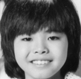

MEMBER
玉本 一夫(たまもと かずお)

長男。リードギター担当。コーラス 芸能活動休止後不動産会社を経営していたが、銀行から58億円の融資を受けるもバブル崩壊で丸々借金として58億円を背負うが完済している。1996年10月に脳内出血で倒れ左半身麻痺の後遺症が残り、車椅子や杖つきでの生活となる。障害者となった経験を生かし、バリアフリー社会の実現を訴え、自由連合から2001年参院選に出馬したが落選。
玉本 光男(たまもと みつお)

次男。ドラムス担当。コーラス。芸能活動休止後美容師の免許を取得する。東京都田無市（現：西東京市）の理髪店で修行時は、顔を見た客が首をひねるなど市内では話題となった。その後はアメリカで活躍するが次第に美容師の業務が多忙となり、近年はテレビ出演を控えている。5人が揃う企画で光男だけ欠席したこともあった。
玉本 正男(たまもと まさお)

三男。ベース担当。ボーカル。都内の建設会社で大工として務める。その後沖縄料理店を経営する一方で、琉球音楽サークル「魔法使いま〜ちゃんとちっちゃな悪魔たちの集い」を結成し、活動している。 アイドル時代からの友人である元ずうとるびの江藤博利とは現在も親交がある。
玉本 晃(たまもと あきら)

四男。ギター担当。メインボーカル。正男と同じ建築会社で、大工の後は営業職に転属した。退職後はT.AKIRAとして、江木俊夫・あいざき進也・狩人の高道とともに結成したとして現在もライブ活動などの音楽活動を続ける。
玉本 妙子(たまもと たえこ)

次女。キーボード担当。ボーカル。日出高等学校を卒業し、1人娘がいる。
具志堅 実(ぐしけん みのる)

兄弟の甥っ子。1975年、マネージャーに専念した長男に変わってメンバー入り。メンバーの中で最も大柄で、光男の代りにテレビ出演することが多い。
安田 浩(やすだ ひろし)

兄弟のいとこ。最後のシングル『悩ませないで』のみ参加